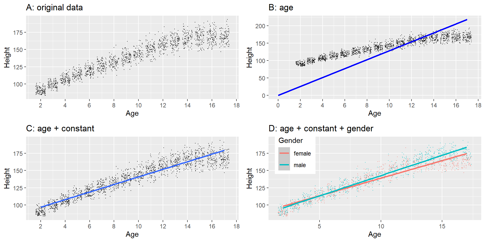
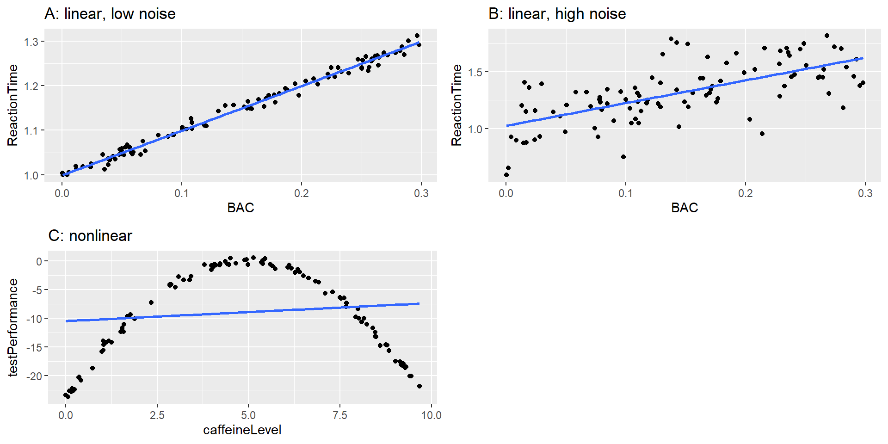
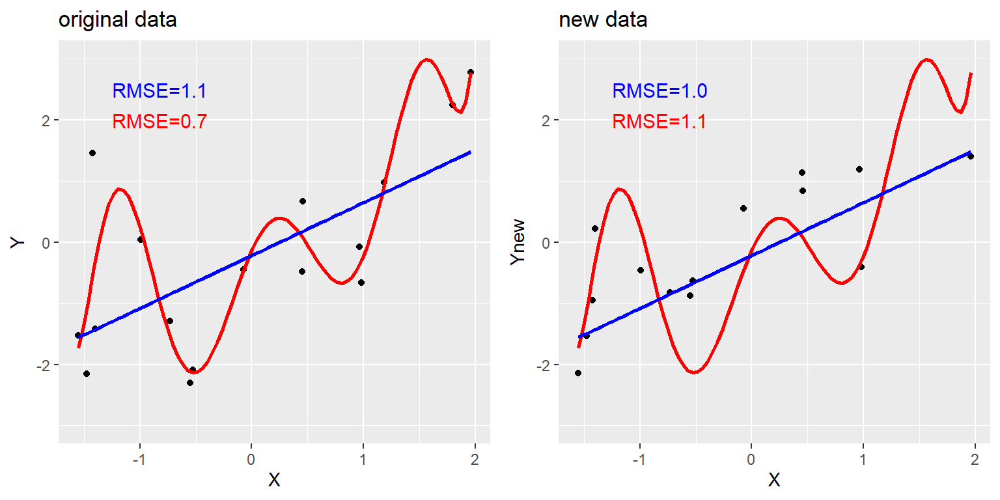
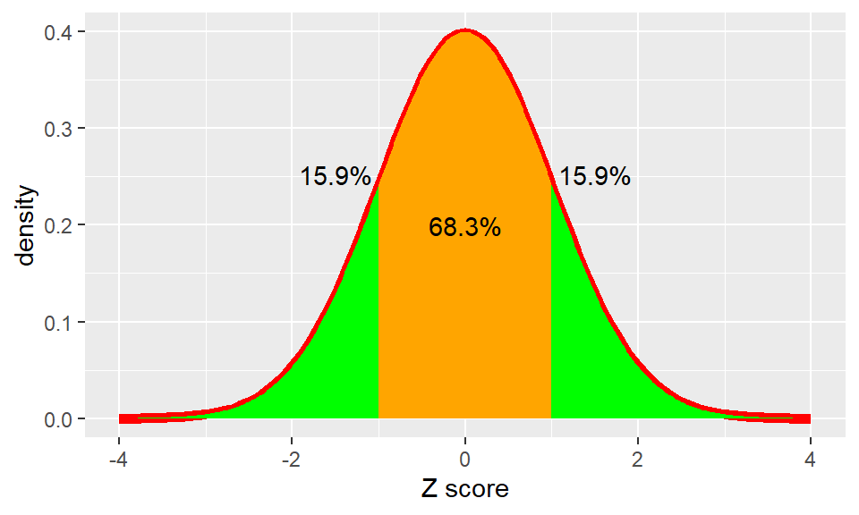

02 Models
Course: “Biostatistics”
Translational Neuroscience
Fitting Models to Data
Form groups of 3-4 and collect the height of each member!
Why do we need Models?
What can we do with data only? Where can a model be helpful?
What is a Model?
“models” are generally simplifications of things in the real world that nonetheless convey the essence of the thing being modeled
All models are wrong but some are useful (George Box)
(ST21, Ch 5)
Aim: Find the model that efficiently and accurately summarizes the data.
A Simple Model
Let’s say we want to have a model of height of students in this Biostatistics class (or height of children based on the NHANES dataset, as used in ST21, see below).
What do you think would be a good model for the height of a student/child?
(Or: Which value should we guess for a particular or new student/child?)

Basic structure of statistical models
\[ data=model+error \]
In general, we want to predict single observations (denoted by i) from the model. The fact that we are looking at predictions and not at actual values of the data/observations is denoted by the “hat”:
\[ \widehat{data_i} = model_i \] The error is then simply the deviation of the actual data from the predicted values:
\[ error_i = data_i - \widehat{data_i} \]
This means that the predicted value of the data for observation i is equal to the value of the model for that observation.
A Simple Model 2
The simplest model would be to predict the mean of the height values for every student/child! This would imply that individual deviations of the mean would be interpreted to be (prediction) errors in such a model.
We can write such a simple model as a formula:
\[ y_i = \beta + \epsilon \]
\(y_i\) denotes the individual observations (hence the \(i\)) of heights, \(\beta\) is a so-called parameter, and \(\epsilon\) is the error term. In this example, the parameter \(\beta\) would be the same value (= the mean height) for everyone (hence it doesn’t need an \(i\) subscript). Parameters are values that we optimize to find the best model.
A Simple Model 3
How do we find parameters that belong to the best fitting model?
How did you come up with model for heights, e.g. the mean?
We try to minimize the error!
Remember, the error is the difference between the actual and predicted values of \(y\) (height):
\[ error_i = y_i - \hat{y_i} \]
If we select a predicted value (or mean) of 400cm, all individuals’ errors would hugely deviate (because no one is 4m tall). If we average these errors, it would still be a big value.
A better candidate for such a simple model is thus the arithmetic mean or average:
\[ \bar{X} = \frac{\sum_{i=1}^{n}x_i}{n} \]
Summing up all individual’s heights and dividing that number by the number of individuals gives us the mean. By definition, the average (directed) error is now 0 (see book for proof, the individual errors cancel out)! This means that the average has no bias to over- or underestimate observations (while 4m would have been a clear overestimation).
A Note on Errors
We usually don’t simply average across the individual (signed) errors, but across the squared errors.
The reason is that we do not want positive and negative errors to cancel each other out.
The mean squared error would be in a different unit than the data (e.g., cm2), which is why we usually take the square root of that value to bring it back to the original unit: This leaves us with the root mean squared error (RMSE)!
Note: We could also use the absolute values of errors, sum those up, and avoid any of these problems. For historical reasons, we do not.
A Slightly More Complex Model
Obviously, the model for predicting height from the average is not very good (RMSE = 27 cm). How can we improve this model?
We can account for other information that we might have!
For example, to account for age might be a good idea: Older children are likely taller than younger ones. We plot height against age to visually inspect the relationship:

A Slightly More Complex Model 2
As we can see, the line (~ model) fits the data points increasingly well, e.g. if we include a constant (also called “intercept”) and age. We would write this as this formula:
\[ \hat{y_i} = \hat{\beta_0} + \hat{\beta_1} * age_i \]
Remember from linear algebra that this defines a line:
\[ y = intercept + slope * x \]
Thus \(\beta_0\) is the parameter for the intercept and \(\beta_1\) for the slope of age!
The model fit is now much better: RMSE = 8.36 cm.
Adding gender? Does not improve model too much! (compared to age)
What is a “Good” Model?
Two aims:
Describe data well (= low error/RMSE)
Generalize to new data (low error when applied to new data)
Can be conflicting!
Where does error come from?
Any ideas?
measurement error (noise): random variation in data
dependent variable is hard to measure precisely (difficult/noisy conditions)
cheap/inadequate equipment for measuring
wrong model specification
important variable is missing from model (age!)
e.g., height has a quadratic relationship with age (old people shrink again)
Examples Measurement Error
Simulated relationship between blood alcohol content and reaction time on a driving test, with best-fitting linear model represented by the line. A: linear relationship with low measurement error. B: linear relationship with higher measurement error. C: Nonlinear relationship with low measurement error and (incorrect) linear model
Can a Model be “too Good”?
Yes! This is called overfitting.
If we fit a line too closely to the data (e.g., with an 8th degree polynomial), the model might not be able to generalize to other data well.

Summarizing Data
Central Tendency
Why summarize data?
A summary is a model & describes the data! E.g., mean = central tendency of the data
Mean, Median, Mode?
Mean = “Balance point” of data; minimizes sum of squared error, but highly influenced by outliers!
Median = “middle” of ranked data; minimizes sum of absolute error, less influenced by extreme values
Mode = most often occurring value (i.e., absolute peak)
Example:
If 4 people earn 50,000 Euros per year and 1 person earns 1,000,000:
Mean: 240,000 Euros
Median: (Rank order: 10,000; 10,000; 10,000; 10,000; 1,000,000) -> middle value = 10,000 Euros
Mode: 10,000 Euros
Variability
How widespread are the data?
Variance and Standard Deviation
Variance = Mean Squared Error
\[ \sigma^2 = \frac{SSE}{N} = \frac{\sum_{i=1}^n (x_i - \mu)^2}{N} \]
(Note: \(x_i\) = value of ind. observation, \(\mu\) = population mean instead of \(\hat{X}\) = sample mean)
Standard Deviation = Root Mean Squared Error
\[ SD = \sigma = \sqrt{\sigma^2} \]
We usually don’t know the population mean \(\mu\), that’s why we estimate the sample variance using the sample mean \(\hat{X}\) (both with the “hat”) and the sample size \(n\) instead of the population size \(N\):
\[ \hat\sigma^2 = \frac{\sum_{i=1}^n (x_i - \hat{X})^2}{n-1} \]
Note: \(n-1\) is used to make the estimate more robust/less biased (I cannot give you an intuition why this is better… please trust me!).
Comparing apples and oranges: Z-Scores
\[ Z_i(x) = \frac{x_i - \mu}{\sigma} \]
- standardizes the distribution: How far is any data point from the mean in units of SD?
- doesn’t change original relationship of data points!
- shifts distribution to have a mean = 0 and scales it to have SD = 1.
- useful if we compare (or use in a model) variables on different scales/units!

Thanks
Learning objectives:
Describe the basic equation for statistical models (data=model + error)
Describe different measures of central tendency and dispersion, how they are computed, and which are appropriate under what circumstances.
Compute a Z-score and describe why they are useful.
Next topics: R sessions on Data Wrangling & Plotting.